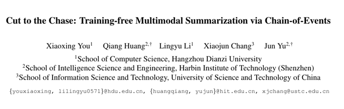
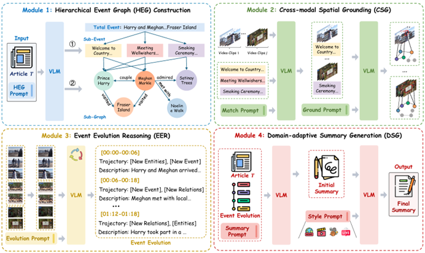
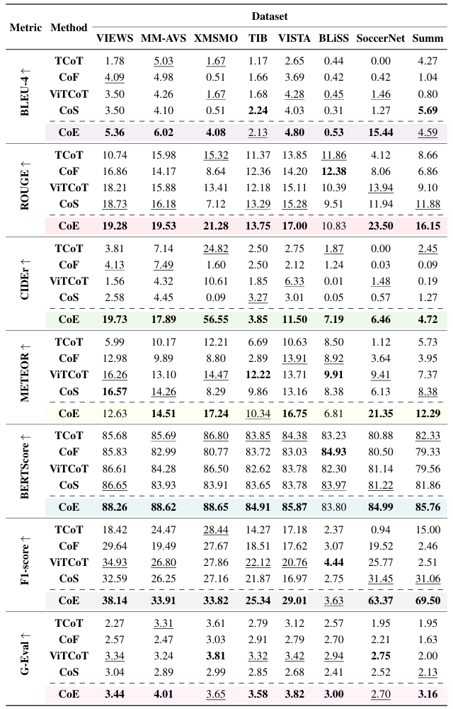

📢 TL;DR： 我们提出了一种无需任务专用训练（Training-free）的多模态摘要框架 CoE（Chain-of-Events）。通过构建层次化事件图（Hierarchical Event Graph, HEG），将视频与文本中的全局事件、子事件及实体关系显式组织起来。在 8 个多模态摘要基准上，CoE 显著优于现有视频 CoT 基线，在无需微调的情况下实现了卓越的可解释性与跨领域泛化能力。

2026年2月，IEEE/CVF CVPR（Conference on Computer Vision and Pattern Recognition, 2026）录用论文名单正式公布。由哈尔滨工业大学（深圳）智能科学与工程学院多媒体智能前沿实验室（M3AIL Research Group）博士生尤晓兴（第一作者）在俞俊教授、黄强教授指导下，与中国科学技术大学合作完成的论文《Cut to the Chase: Training-free Multimodal Summarization via Chain-of-Events》成功入选。该研究在无需训练的多模态摘要生成与时序推理方向取得了重要突破。
本论文提出了创新性的事件链（Chain-of-Events, CoE）推理框架，用于解决传统多模态摘要对标注数据依赖强、跨模态对齐隐式、长视频事件演化建模不足等挑战。CoE通过构建层次化事件图（HEG）作为语义骨架，并集成跨模态空间定位（CSG）、事件演化推理（EER）和领域自适应摘要生成（DSG），实现了从视频—文本输入到结构化摘要输出的端到端推理。

在 VIEWS、MM-AVS、XMSMO、TIB、VISTA、BLiSS、SoccerNet 和 Summ 共八个标准基准上，CoE 在零样本（Zero-shot）设定下展现了显著优势。实验结果显示，CoE 平均取得了 +3.04 ROUGE、+9.51 CIDEr 和 +1.88 BERTScore 的性能提升。研究进一步证明，显式事件图建模能显著增强实体一致性与长程事件建模能力，提升了摘要的逻辑性。
本研究由哈尔滨工业大学（深圳）牵头，联合中国科学技术大学合作完成。充分体现了M3AIL实验室在多模态大模型、长视频理解与开放域推理领域的持续创新能力。
CoE 为多模态任务的可解释性提供了全新范式，其无需训练、易于扩展的特性有望推动多模态摘要在实际复杂场景中的落地。未来，团队将进一步探索 CoE 在复杂时序逻辑推理及实时视频分析中的潜力，推动多模态感知向认知推理的进化。